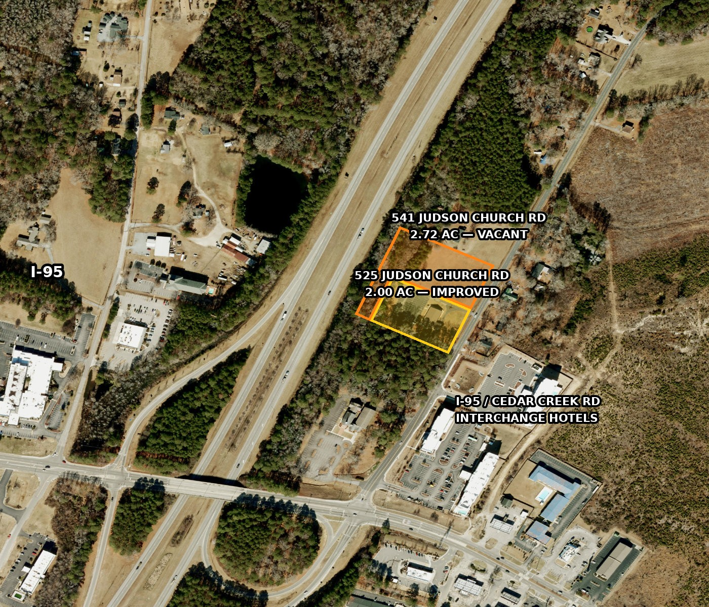

525 & 541 Judson Church Rd — Broker Price Opinion
Two adjoining A1-Agricultural-zoned parcels owned by Fay East Congregation of Jehovah's Witnesses Fay NC Inc, sitting directly inside the I-95 / Cedar Creek Rd interchange commercial node in Fayetteville, NC — 525 Judson Church Rd, a 2.00-acre parcel improved with a 4,750 SF Kingdom Hall building, and 541 Judson Church Rd, an adjoining 2.72-acre vacant tract. Both parcels were acquired together on 2/2/2016 under a single exempt deed and have never traded at arm's length. This opinion independently researches verified closed-sale comparables — church/religious-assembly building sales for 525 and vacant A1-Agricultural land sales for 541, both restricted to Cumberland County and weighted toward proximity to I-95 — to support a recommended initial asking price for the two-parcel offering. Comp research and adjustment analysis are presented property-by-property, then combined into a single overall value conclusion in this report.

Full comp research, adjustment grids, and an honest discussion of interchange-proximity premiums (and a counter-example that argues against overstating them) are set out property-by-property below, then combined into the single value conclusion above.
Subject property summaries
525 Judson Church Rd, Fayetteville, NC 28312
| PIN | 0455-48-6526 |
|---|---|
| Lot size | 2.00 acres |
| Zoning | A1 – Agricultural District |
| Building | 4,750 SF Kingdom Hall (county GROSS_LEASABLE_AREA field), plus a small outbuilding assessed at $16,219 |
| Assessed land value | $43,500 (~$21,750/ac) |
| Assessed building value | $292,612 |
| Total assessed value | $336,112 |
| Deed / acquisition | Deed Book 9797 / Page 0387, dated 2/2/2016, 0 revenue stamps — exempt / non-arm's-length transfer, no usable recorded sale price |
| Source | Cumberland County GIS parcel record |
541 Judson Church Rd, Fayetteville, NC 28312
| PIN | 0455-48-6756 |
|---|---|
| Lot size | 2.72 acres |
| Zoning | A1 – Agricultural District |
| Improvements | None — raw / vacant land |
| Assessed land value | $52,993 (~$19,483/ac) |
| Total assessed value | $52,993 |
| Deed / acquisition | Same deed as 525 — Deed Book 9797 / Page 0387, dated 2/2/2016, 0 revenue stamps — exempt / non-arm's-length transfer, no usable recorded sale price |
| Source | Cumberland County GIS parcel record |
Both parcels sit in the immediate I-95 / Cedar Creek Rd interchange node — the SpringHill Suites by Marriott Fayetteville I-95 (520 Judson Church Rd) and Tru by Hilton Fayetteville I-95 are both within a few hundred feet, and Judson Baptist Church (505 Judson Church Rd) is adjacent. Neither subject parcel has ever recorded an arm's-length sale, so no prior-purchase comp exists for either; all comps below are independently researched third-party transactions. Parcel data verified against Cumberland County GIS tax records, pulled 8/13/2026.
Methodology and verification basis
All comparable sale prices below come from recorded deed data in the Cumberland County tax/GIS system, independently researched by Grant-Murray Real Estate — comps are restricted to Cumberland County and, within the vacant-land set, weighted toward proximity to the I-95 interchange, per the scope of this assignment.
- Source of record: the Cumberland County Tax Parcels GIS layer publishes recorded deed book/page, deed date, tax acreage, building area (GROSS_LEASABLE_AREA), zoning, and revenue (excise) stamps for every parcel.
- Sale price derivation: North Carolina excise tax is $2.00 per $1,000 of consideration (Cumberland County Register of Deeds FAQ), so sale price = revenue stamps × 500. Every price below was computed and verified this way against a live GIS query.
- Arm's-length screen: parcels with 0 revenue stamps (exempt / non-consideration transfers — including the subject's own 2016 acquisition) are excluded from the comp statistics; excluded transfers relevant to this assignment are disclosed below.
- Multi-parcel deeds are disclosed where they occur (two of the church comps convey an adjoining vacant parcel in the same deed); the full deed price and the extra land are both noted.
- Grantor (seller) names could not be retrieved — the county Register of Deeds public search was unreachable during this research session — and are reported as n.a. throughout. Building age (YEAR_BUILT) is also null for exempt/institutional parcels including the subject, so no age/condition adjustment is quantified from county data.
Market context — the I-95 / Cedar Creek Rd interchange node
Both subject parcels carry A1-Agricultural zoning, but they sit inside an active, hotel-anchored interstate interchange node: the SpringHill Suites by Marriott (520 Judson Church Rd, built 2023) and Tru by Hilton both opened within the last few years a few hundred feet away. That raises the question of whether the subject parcels — and especially the vacant 541 parcel — should be valued closer to commercially-zoned interchange land or to rural A1 land further from the interchange.
The data says the premium tracks zoning and frontage, not mere proximity. Vacant land at this interchange with CC or LC commercial zoning has sold for $71,006 – $284,091 per acre (four sales within 1.1 miles, including the parcel directly adjacent at 520 Judson Church Rd). A1-Agricultural tracts of similar size in the same county sold for a fraction of that — $9,815 – $41,935 per acre, median $20,652/ac (nine sales). Within the A1 group there is a real but much smaller location gradient: the two A1 tracts nearest this interchange (3108 A B Carter Rd, $41,935/ac at 0.97 mi, and 3051 Fields Rd, $37,500/ac at 1.83 mi) both sold above the rural A1 median, while tracts 2–3.3 miles out sold at the bottom of the range.
Honest counter-evidence: 0 Nuffield Rd is only 0.58 miles from the subject but sold for just $9,722/ac ($35,000 for 3.60 ac, rural-residential zoning) — because it is an interior tract with no commercial frontage or visibility. That sale demonstrates that raw distance to the interchange does not by itself create value; frontage and zoning do most of the work. Given that, 541's 2.72 vacant acres are valued in this report toward the upper end of the A1-Agricultural range with an upward adjustment for its interchange-node location and rezoning potential — not at the commercial-zoned interchange rate, which would require a rezoning that is not currently in hand.
525 Judson Church Rd — comparable building sales
Thirteen verified, arm's-length church and religious-assembly building sales in Cumberland County, all independently confirmed against county deed and GIS records (not taken from any marketing brochure). Distances are measured from parcel-polygon centroids to the subject. The seven comps used in the adjustment matrix below are marked ★.
| Comp | Sale Date | Price | Bldg SF | Acreage | $/SF | Dist. | Zoning | Notes | Source |
|---|---|---|---|---|---|---|---|---|---|
| ★ 619 Cedar Creek Rd | 2/2/2022 | $625,000 | 11,416 | 2.00 | $54.75 | 2.3 mi | SF6 | United Gospel Fellowship Covenant Ministries — closest location comp, same Cedar Creek Rd corridor | GIS |
| ★ 2415 Rosehill Rd | 8/23/2018 | $360,000 | 4,969 | 2.14 | $72.45 | 6.8 mi | SF6 | Islamic Center of Fayetteville — closest size/site match to subject | GIS |
| ★ 4519 Calico St | 11/30/2023 | $425,000 | 4,368 | 2.00 | $97.30 | 6.9 mi | R10 | Grace Place Christian Church — deed bundles an adjoining 2.71-ac vacant parcel; best two-parcel structural analog to subject | GIS |
| ★ 1407 Tom Starling Rd | 1/4/2021 | $230,000 | 3,200 | 2.26 | $71.88 | 5.3 mi | M2/R6A | Unity Church of Fayetteville (prior use: Redemption Healing Restoration Church) | GIS |
| ★ 426 Baywood Rd | 11/4/2021 | $390,000 | 3,600 | 2.01 | $108.33 | 3.6 mi | C3 | Word of God Christian Center — deed bundles an adjoining 2.20-ac vacant commercial lot | GIS |
| ★ 405 N Main St, Spring Lake | 6/26/2026 | $825,000 | 4,875 | 1.58 | $169.23 | 14.4 mi | O&I | The Word Church of Fayetteville — most recent church sale in the county; high end of range | GIS |
| 227 Pennsylvania Ave | 5/28/2026 | $373,500 | 2,670 | 0.34 | $139.89 | 7.1 mi | SF6 | Pentecostal Missionary Church of Christ (4th Watch) — small urban site, not size-comparable | GIS |
| 1070 Winslow St | 3/25/2025 | $325,000 | 8,125 | 0.46 | $40.00 | 4.5 mi | SF6 | Word of Faith Ministries — large building, minimal land, low end of range | GIS |
| 2727 Murchison Rd | 7/28/2021 | $375,000 | 6,500 | 0.23 | $57.69 | 7.8 mi | LC | Chosen Remnant Ministries — deed bundles adjoining 0.23-ac lot; small urban site | GIS |
| 300 Suzanne St | 5/7/2026 | $900,000 | 9,644 | 4.64 | $93.32 | 9.5 mi | SF10 | The Church of Pentecost USA — above subject size range, brackets the upper end | GIS |
| 4648 Bragg Blvd | 3/1/2021 | $440,000 | 5,980 | 1.70 | $73.58 | 9.4 mi | CC | Sandhills Islamic Center — similar building type, not church-specific at time of sale (county class: retail/shop) | GIS |
| 6317 Raeford Rd | 1/8/2026 | $395,000 | 5,225 | 0.69 | $75.60 | 9.8 mi | LC | Redeemed Christian Church of God Victory Temple — similar building type, not church-specific at time of sale | GIS |
| ★ 7582 Raeford Rd | 6/15/2017 | $485,000 | 6,298 | 1.56 | $77.01 | 13.2 mi | OI | Beauty Spot Missionary Baptist Church — oldest sale in the set | GIS |
All 13 sales are in Cumberland County, NC. Full comp-set statistics: $/SF range $40.00–$169.23, median $75.60, mean $87.00 (all 13 sales); restricting to the six comps on 1.5–2.7-acre sites, $/SF range $54.75–$169.23, median $84.87. Pulled 8/13/2026.
525 Judson Church Rd — adjustment matrix
Each comp is adjusted to the subject's own profile: 4,750 SF Kingdom Hall on 2.00 acres, A1-Agricultural zoning, interstate-interchange-adjacent. Two comps (Calico St, Baywood Rd) convey a bundled vacant parcel in the same deed; those are first adjusted to a building-only basis by subtracting the bundled land's value at the rural A1 land median ($20,652/ac, from the Property 2 land comp set below) before size/time adjustments are applied. Positive net adjustments mean the comp understates the subject's indicated value; negative adjustments mean the comp overstates it.
| Comp property | Unadj. $/SF | Net Adj. % | What was adjusted | Adj. $/SF |
|---|---|---|---|---|
| 619 Cedar Creek Rd | $54.75 | +23% | Size: comp's 11,416 SF building is 140% larger than the subject's 4,750 SF, and larger religious-assembly buildings consistently trade at a lower $/SF, so a smaller building commands a premium (+15%). Time: sale is roughly 4.5 years old; the corridor has appreciated since, evidenced by more recent sales in this set trading well above $54.75/SF (+8%). Location: closest comp in the set at 2.3 mi, same corridor as subject, no location adjustment (0%). | $67.34 |
| 2415 Rosehill Rd | $72.45 | +25% | Size: comp's 4,969 SF is within 5% of the subject's 4,750 SF, no size adjustment (0%). Location: 6.8 mi from subject, off the interchange corridor, versus the subject's interstate-adjacent position (+5%). Time: sale is roughly 8 years old, the oldest usable single-parcel comp; substantial market appreciation applied (+20%). | $90.56 |
| 4519 Calico St (land-stripped) | $84.49* | +5% | *Deed bundles an adjoining 2.71-ac vacant parcel; $55,967 of the $425,000 price is allocated to that land at the $20,652/ac A1 median, leaving a building-only basis of $84.49/SF on the 4,368 SF Kingdom Hall-style building. Size: comp is 8% smaller than the subject (−3%). Time: sale is roughly 3 years old (+8%). Location: 6.9 mi from subject, off the interchange corridor, offset within the net figure. | $88.71 |
| 1407 Tom Starling Rd | $71.88 | +20% | Size: comp's 3,200 SF building is 33% smaller than the subject, which would normally support a premium, but the comp's low unadjusted $/SF suggests inferior location/condition largely offsetting the size premium (net 0% on size). Location: 5.3 mi out, industrial-adjacent zoning, inferior to the subject's interchange position (+8%). Time: sale is roughly 5.5 years old (+12%). | $86.26 |
| 426 Baywood Rd (land-stripped) | $95.71* | +10% | *Deed bundles an adjoining 2.20-ac vacant commercial lot; $45,434 of the $390,000 price is allocated to that land at the $20,652/ac A1 median, leaving a building-only basis of $95.71/SF on the 3,600 SF building. Size: comp is 24% smaller than subject, largely already reflected in the elevated stripped basis (0%). Time: sale is roughly 4.75 years old (+10%). | $105.28 |
| 405 N Main St, Spring Lake | $169.23 | −15% | Size: comp's 4,875 SF is within 3% of subject, no size adjustment (0%). Zoning/submarket: comp is O&I (Office & Institution) zoning in the Spring Lake submarket, a materially higher-value zoning classification than the subject's A1-Agricultural designation, and 14.4 mi away (−15%). Time: most recent sale in the set, no time adjustment (0%). | $143.85 |
| 7582 Raeford Rd | $77.01 | +35% | Size: comp's 6,298 SF building is 33% larger than the subject, and larger buildings trade at a lower $/SF, supporting a premium for the smaller subject (+10%). Time: oldest comp in the set at roughly 9 years, the largest time adjustment applied in this grid (+25%). Location: 13.2 mi out, off the interchange corridor, netted into the time figure. | $103.96 |
Average of the seven adjusted comps: $97.99/SF (range $67.34–$143.85/SF; median $90.56/SF). Adjustments reflect Grant-Murray Real Estate's professional judgment as the prospective listing broker based on each comp's size, location, sale date, and (for two comps) allocation of bundled land value — this is a broker's opinion of value for marketing purposes, not a certified USPAP appraisal adjustment analysis.
525 Judson Church Rd — building value analysis
The seven-comp grid reconciles to an indicated range of roughly $67–$144 per SF, averaging $97.99/SF and medianing $90.56/SF. Applied to the subject's 4,750 SF Kingdom Hall building, that produces an indicated total value of approximately $320,000 to $683,000, with a broker's point estimate near $445,000 (~$93.68/SF) — weighted toward the comps most comparable in size and market tier (2415 Rosehill Rd, 4519 Calico St, 426 Baywood Rd, all $85–$105/SF adjusted) and tempered relative to the highest comp (405 N Main St, Spring Lake), which sits in a stronger O&I-zoned submarket the subject does not share.
No comp in this data set is a direct church sale within 2 miles of the subject — the closest, 619 Cedar Creek Rd, is 2.3 miles out — and no arm's-length church sale in the county was found on A1-Agricultural zoning specifically, so the zoning treatment here is broker judgment applied consistently across the grid, not a comp-derived adjustment. That is disclosed rather than hidden: the $320,000–$683,000 range is wide because the underlying market has relatively few, dispersed church-building transactions to draw on. This building-value analysis feeds into the combined opinion of value for both parcels together, set out after the land analysis below.
Reference only: 525's assessed value is $336,112. This building-value analysis is not, on its own, a listing recommendation — see the combined opinion of value below for the recommended list price covering both parcels.
541 Judson Church Rd — comparable land sales
Nine verified, arm's-length A1-Agricultural vacant land sales in Cumberland County, the zoning classification that matches the subject. Seven of the nine are used in the adjustment matrix below (marked ★); the remaining two, more distant/larger A1 tracts (3740 A B Carter Rd, 3795 Batcave Dr), are included in the table for full disclosure but excluded from the matrix as lower-weight outliers on size. Four CC/LC-zoned interchange-commercial land sales are discussed separately below for context on rezoning upside, but are not used as direct comps given the subject's current A1 zoning.
| Comp | Sale Date | Price | Acreage | $/Acre | Dist. | Zoning | Notes | Source |
|---|---|---|---|---|---|---|---|---|
| ★ 3108 A B Carter Rd | 7/22/2025 | $65,000 | 1.55 | $41,935 | 0.97 mi | A1 | Closest A1 comp to the interchange; sits above the rural A1 median | GIS |
| ★ 3051 Fields Rd | 11/24/2025 | $75,000 | 2.00 | $37,500 | 1.83 mi | A1 | New-subdivision 2.00-ac lot, same size as subject's improved parcel | GIS |
| ★ 3511 Cedar Creek Rd | 4/8/2026 | $47,500 | 2.09 | $22,727 | 2.63 mi | A1 | Rural segment of Cedar Creek Rd corridor | GIS |
| ★ 3123 Cedar Creek Rd | 7/21/2023 | $37,500 | 2.01 | $18,657 | 2.06 mi | A1 | Key "rural A1 baseline" data point away from the interchange | GIS |
| ★ 3445 Peaceful Farm Dr | 10/16/2025 | $40,000 | 2.00 | $20,000 | 1.70 mi | A1 | Rural recombination lot | GIS |
| ★ 1067 Old Vander Rd | 6/23/2026 | $80,000 | 3.08 | $25,974 | 3.29 mi | A1 | Rural, larger tract than subject | GIS |
| ★ 1000 Old Vander Rd | 12/10/2025 | $95,000 | 4.60 | $20,652 | 3.12 mi | A1 | Rural, largest tract in the set; sets the countywide A1 median | GIS |
| 3740 A B Carter Rd | 11/22/2023 | $53,500 | 4.83 | $11,077 | 1.99 mi | A1 | Larger tract, lower $/ac; excluded from matrix as a size outlier | GIS |
| 3795 Batcave Dr | 3/10/2025 | $58,500 | 5.96 | $9,815 | 2.11 mi | A1 | Largest tract, lowest $/ac; excluded from matrix as a size outlier | GIS |
All nine A1 comps are in Cumberland County, NC. Full A1 comp-set statistics: $9,815–$41,935/ac, median $20,652/ac. For context, four CC/LC-zoned interchange-commercial land sales within 1.1 mi of the subject sold for $71,006–$284,091/ac (median $200,749/ac) — see 520 Judson Church Rd and 1885 Cedar Creek Rd — but these require a rezoning the subject does not currently have and are not used as direct value comps. Pulled 8/13/2026.
541 Judson Church Rd — adjustment matrix
Each comp is adjusted to the subject's own profile: 2.72 vacant acres, A1-Agricultural zoning, sitting directly inside the I-95 / Cedar Creek Rd interchange node (effectively 0 mi from the interchange itself). Location adjustments push every comp upward because every comp is measurably farther from the interchange than the subject; size adjustments reflect that smaller tracts trade at a per-acre premium and larger tracts at a discount.
| Comp property | Unadj. $/ac | Net Adj. % | What was adjusted | Adj. $/ac |
|---|---|---|---|---|
| 3108 A B Carter Rd | $41,935 | +5% | Size: comp's 1.55 ac is 43% smaller than the subject's 2.72 ac, a per-acre premium to strip out (−10%). Location: comp is 0.97 mi from the interchange versus the subject's on-node position, so the subject rates a further premium (+15%). Time: sale is roughly 1 year old (0%). | $44,032 |
| 3051 Fields Rd | $37,500 | +7% | Size: comp's 2.00 ac is 27% smaller (−5%). Location: 1.83 mi out, farther than 3108 A B Carter Rd (+12%). Time: recent sale (0%). | $40,125 |
| 3511 Cedar Creek Rd | $22,727 | +15% | Size: comp's 2.09 ac is 23% smaller (−3%). Location: 2.63 mi out, the farthest of the primary comps (+18%). Time: most recent sale in the set (0%). | $26,136 |
| 3123 Cedar Creek Rd | $18,657 | +20% | Size: comp's 2.01 ac is 26% smaller (−3%). Location: 2.06 mi out, the "rural A1 baseline" away from the interchange (+15%). Time: sale is roughly 3 years old (+8%). | $22,388 |
| 3445 Peaceful Farm Dr | $20,000 | +9% | Size: comp's 2.00 ac is 27% smaller (−3%). Location: 1.70 mi out (+12%). Time: recent sale (0%). | $21,800 |
| 1067 Old Vander Rd | $25,974 | +25% | Size: comp's 3.08 ac is 13% larger than subject, and larger tracts trade at a lower $/ac, so the smaller subject rates a premium (+5%). Location: 3.29 mi out, the most distant comp used (+20%). Time: most recent sale in the set (0%). | $32,468 |
| 1000 Old Vander Rd | $20,652 | +32% | Size: comp's 4.60 ac is 69% larger than subject, the largest size gap in the set, supporting the largest size premium (+12%). Location: 3.12 mi out (+20%). Time: recent sale (0%). | $27,261 |
Average of the seven adjusted comps: $30,601/acre (range $21,800–$44,032/ac; median $27,261/ac). Adjustments reflect Grant-Murray Real Estate's professional judgment as the prospective listing broker, applying the interchange-proximity premium disclosed in the market context section above; this is a broker's opinion of value for marketing purposes, not a certified USPAP appraisal adjustment analysis.
541 Judson Church Rd — land value analysis
The seven-comp grid reconciles to an indicated range of roughly $21,800–$44,032 per acre, averaging $30,601/ac and medianing $27,261/ac. Applied to the subject's 2.72 vacant acres, that produces an indicated total value of approximately $59,000 to $120,000, with a broker's point estimate near $80,000 (~$29,412/ac) — weighted toward the two comps closest to the interchange (3108 A B Carter Rd and 3051 Fields Rd, both adjusted above $40,000/ac) while still respecting the pull of the more distant, larger-tract comps toward the lower end of the range.
Honest disclosure on the upside case: if 541 could be rezoned to CC or LC commercial — consistent with the four interchange-commercial land sales at $71,006–$284,091/ac discussed above — its value could be several times this estimate. That upside is real but speculative absent an actual rezoning application, and this report does not price it in as a value conclusion; it is disclosed as a strategic consideration for the seller, not folded into the recommended list price below. The subject's own $19,483/ac assessed land value falls near the low end of the comp-adjusted range, which is expected given assessed values in North Carolina typically lag verified market transactions.
Reference only: 541's assessed value is $52,993. This land-value analysis is not, on its own, a listing recommendation — see the combined opinion of value immediately below for the recommended list price covering both parcels.
Combined opinion of value & recommended list price
Summing the two independent comp analyses above — church-building sales applied to the 4,750 SF Kingdom Hall on 525, and A1-Agricultural land sales applied to the 2.72 vacant acres on 541 — produces a combined indicated value range of roughly $379,000 to $803,000 for the two-parcel offering, with a combined broker's point estimate near $525,000.
Grant-Murray Real Estate recommends an initial combined list price of $544,800 for the 525 & 541 Judson Church Rd offering — modestly above the combined point estimate to preserve normal negotiating room on a new listing, while remaining well inside the combined comp-supported range. This is a broker's opinion for marketing purposes, not a certified USPAP appraisal. If the parcels are ultimately marketed or sold separately, allocation of the combined price between them is a matter of broker judgment and negotiation at time of offer.
Listing / commission terms
6% — co-brokered sale
A 6% commission applies to the gross sale price when the buyer is procured through a cooperating (buyer's-side) broker. This is split between Grant-Murray Real Estate, LLC as listing broker and the cooperating buyer's broker per standard MLS/commercial co-brokerage practice.
4% — in-house sale
A 4% commission applies when Grant-Murray Real Estate, LLC procures the buyer directly, with no cooperating buyer's broker involved in the transaction.
These terms apply to the combined sale price for both parcels together, or to each parcel's individual sale price should the offering ultimately be split and sold separately. Final listing agreement terms, duration, and any marketing-cost provisions are to be set out in a separate written listing agreement between Grant-Murray Real Estate, LLC and Fay East Congregation of Jehovah's Witnesses Fay NC Inc.
Limitations
- Cumberland County prices are derived from excise stamps ($1 of stamps = $500 of price); stamps are not paid on exempt transfers, so a 0-stamp parcel (including both subject parcels' 2016 acquisition) indicates a non-arm's-length transfer with no usable price. See the Register of Deeds excise-tax schedule.
- Grantor (seller) names are unavailable for every comp in this report — the county Register of Deeds public search did not respond during this research session, so only buyer (post-sale owner) names could be confirmed from the GIS layer.
- Building age (YEAR_BUILT) is not populated for the subject or for any comp in the church/religious-assembly set, so no age or condition adjustment is quantified from county data; any such difference is embedded, unquantified, in the broker's judgment-based net adjustments above.
- Building area is the county assessor's GROSS_LEASABLE_AREA field, not a field measurement, for both the subject and every comp — consistent basis, but not independently verified by physical measurement.
- Acreage used throughout is county tax acreage, not surveyed acreage.
- The land-value allocation used to strip bundled vacant land out of the 4519 Calico St and 426 Baywood Rd comps ($20,652/ac) is the median of the separate A1 land comp set, not a parcel-specific appraisal of those bundled tracts, and carries additional uncertainty as a result.
- No confirmed closed sale of a rezoned, commercially-entitled Judson Church Rd-adjacent A1 parcel was located; any premium attributed to 541's rezoning potential is broker judgment, disclosed as such, and is not folded into the recommended list price.
Prepared by
Patrick Murray, CCIM, SIOR
Principal / Broker in Charge
Grant-Murray Real Estate, LLC
150 N. McPherson Church Rd
Fayetteville, NC 28303
O: 910.829.1617 · C: 910.861.0449
patrick@grantmurrayre.com
grantmurrayre.com
Prepared for
Fay East Congregation of Jehovah's Witnesses Fay NC Inc
Owner of record, 525 & 541 Judson Church Rd (PINs 0455-48-6526 & 0455-48-6756)
This Broker Price Opinion (BPO) is prepared by Patrick Murray, CCIM, SIOR, of Grant-Murray Real Estate, LLC. It is not an appraisal and does not constitute a certified valuation under USPAP. The value conclusions herein are based on comparable market sales data and the broker's professional judgment as of the date noted, are presented as a single combined value range and recommendation covering both subject parcels together, and are subject to verification, changing market conditions, deed-level confirmation, and further due diligence.